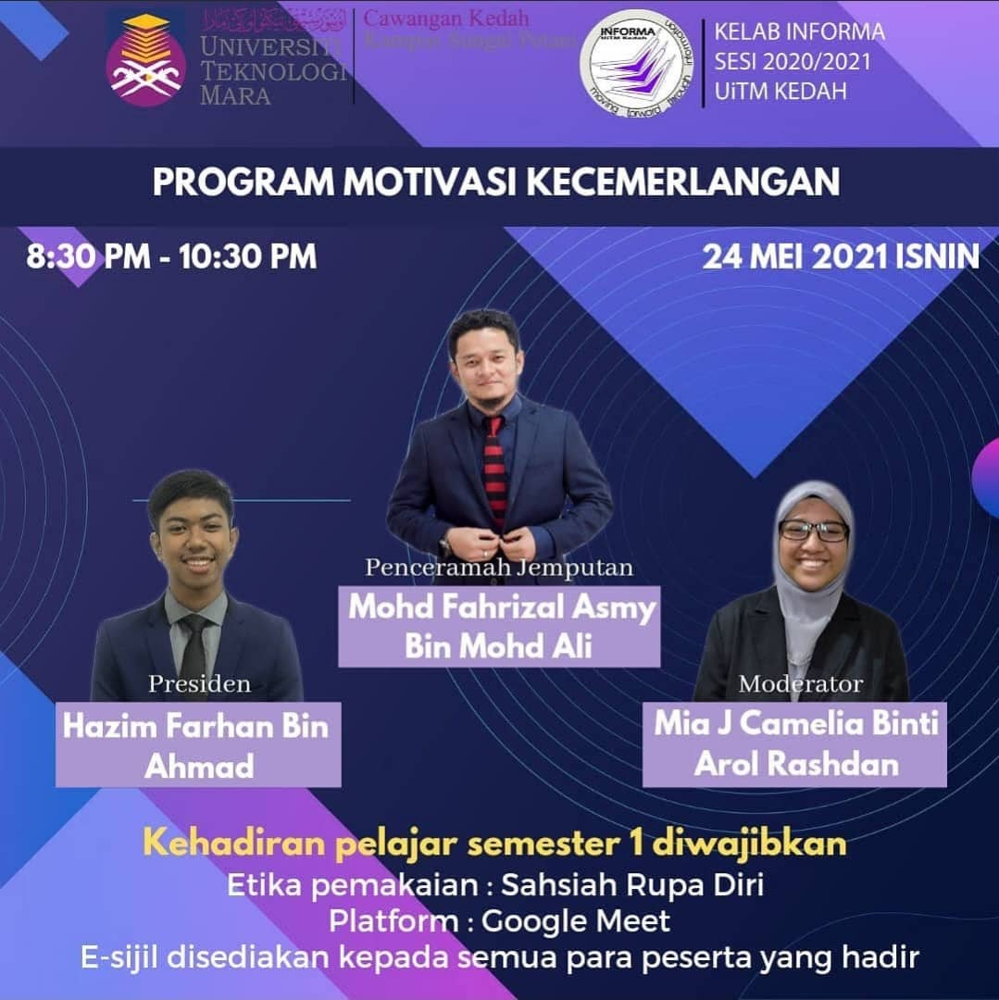
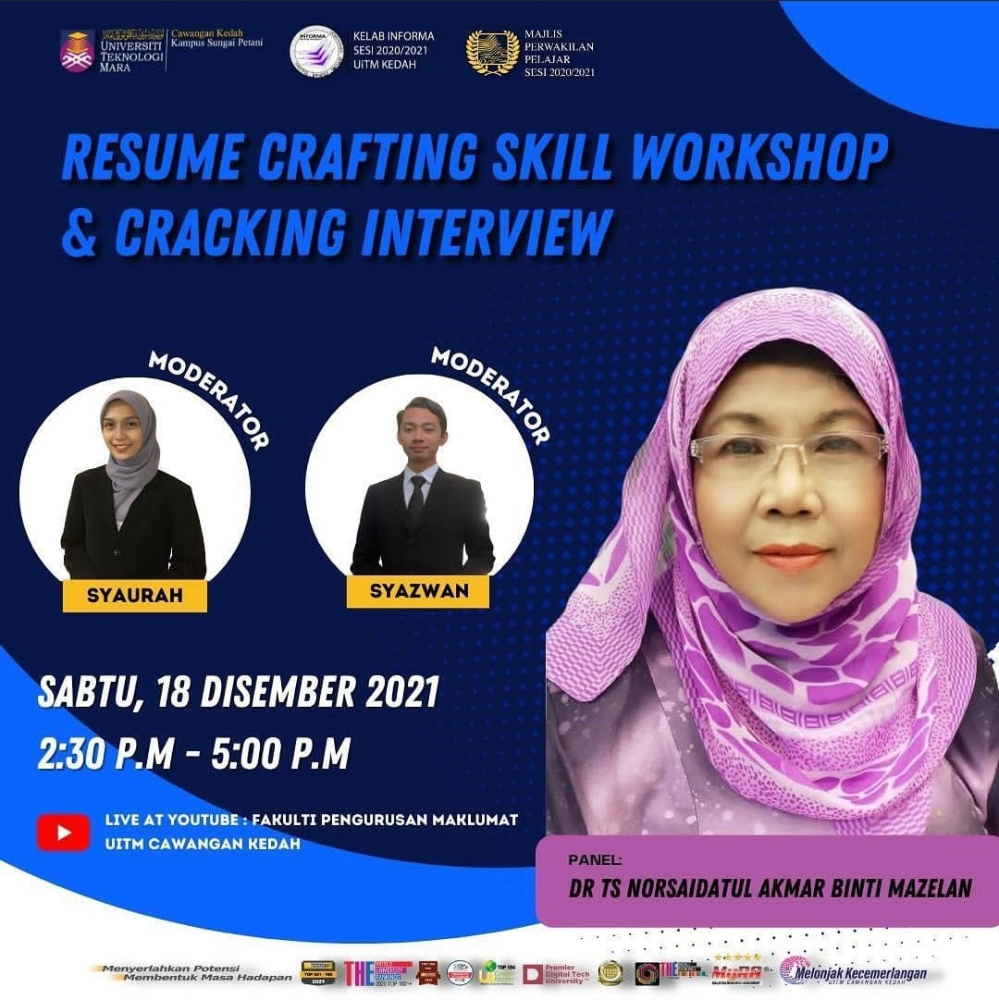
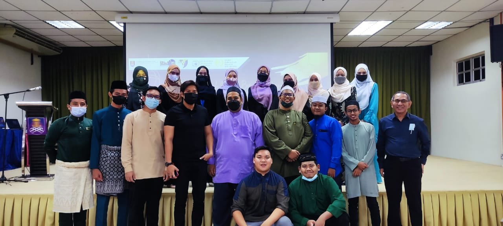
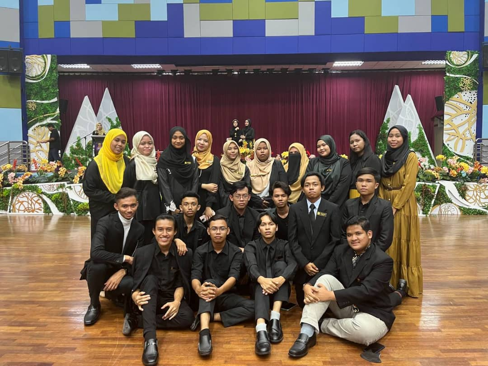
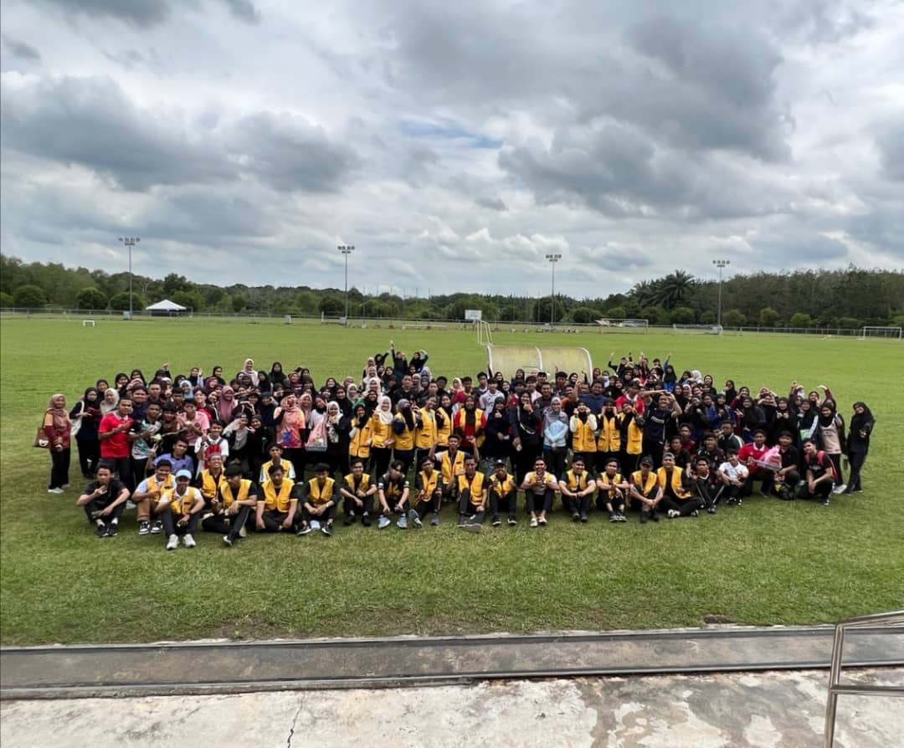
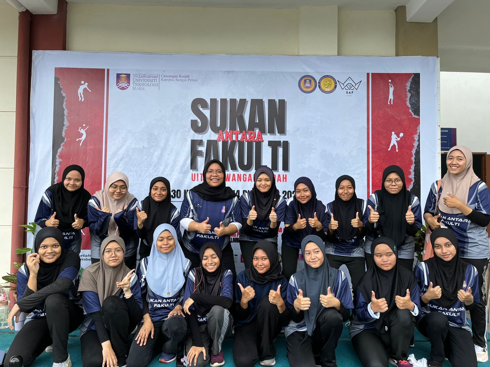

I was in-charged of designing a poster to promote the 'Program Motivasi Kecemerlangan' event as well as trying to communicate a message about the details for the students in UiTM Kedah, especially Semester 1.
I was responsibled for writing the 'Resume Making Skills Workshop' invitation letter to the lecturer. This letter helped the project leader to calculate the number of people who can attend the workshop and the people he should expect so that the committee members can make the necessary arrangements.
'Program Ramah Mesra Pelajar OKU & Tahfiz Plus' is an iftar event during Ramadhan. I was assigned to escort the handicapped students and tahfiz students towards their respective tables so they won't face any troubles and get to their seats safely.
I was instructed to guide the VIPs throughout the 'Senior's Night Celebration Event'. This is an event formality as well as to ensure that the event is having a steady hand to usher them according to the tentative flow.
As a vice-secretary of INFORMA academic club, I made a report of all of the programs held during the last semester in powerpoint slides. Then, in AGM, I presented it to the IM students, lecturers and club advisers along with the upcoming programs that will be done in the current semester.
I was in-control of finding the food supplier for the 'Survival With Information Program'. Since it's an explorace theme program, I must make sure that the students are having breakfast before doing outdoor activities to avoid fainting, gastric, and so on. Other than that, I also needed to serve the VIPs and prepare the dining place.
My role was to find the netball representatives from Faculty of IM. There were 26 players who decided to participate, so I held a selection to choose 2 teams with 20 players including additionals. Then, I managed their registration, monitored their progression, fulfilled their needs during training, and showed support during the tournament.
